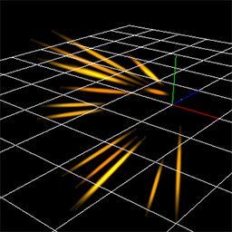
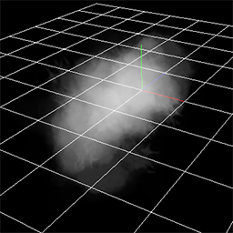
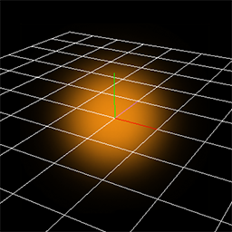
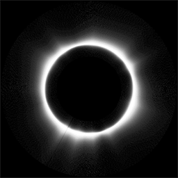
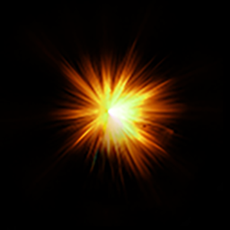

09.制作枪口焰！¶
枪口焰¶
分析一下枪口焰的结构。本章中制作的枪口焰由三个主要部分组成。分布是闪光、火花和烟雾。

闪光 |

火花 |

烟雾 |
在制作复杂的特效时，必须分别考虑每个部分。本章解释了如何制作每个部分。
你可以通过下面的链接下载为本章内容预制的特效素材。
闪光¶
闪光由三种不同的精灵表示。在本章中，Z是子弹移动的方向。两种闪光在XY方向传播，一种在所有方向传播。
在XY方向传播的闪光由放置方法设置为固定的精灵表示。为了丰富表现效果，我们准备了两种类型的精灵：一种是扩大并消失的，一种是缩小并消失的。两者都只显示一瞬间，所以它们应该在大约20帧后消失。
还有一个向各个方向扩散的精灵，它应该膨胀并消失。
各自使用的图像和粒子如下。
前几章中介绍的参数，如淡入、淡出和整体颜色，也进行了设置。
由于要更改的参数很多，它们已经提前设置好了。

闪光1 |

闪光2 |

闪光3 |
|

闪光1 |

闪光2 |

闪光3 |
闪光特效如下所示。

闪光
火花¶
火花是用多个圆形图像的精灵表示的。然而，火花的飞行方向是用父子关系设置的。
火花是沿着以Z方向为轴线的圆形排列的。为了将其排列为圆形，设置圆作为父节点的生成方法。勾选影响生成角度，使火花指向圆的外侧。
这样，当子粒子沿相对于父节点的Y轴方向移动时，它们实际会向圆的外侧移动。
生成方法和父子关系
此外，将父节点围绕Z轴旋转。这样，当子粒子向Y方向移动时，它将面对子弹移动的方向。
生成方法和父子关系
子粒子的形状在开始时应该比较长，在结束时应该比较短。这种行为是通过移动和缩放的缓动来实现的。
子粒子的行为已经在前面的章节中解释过了，因此例子中已经预先设置好了。
父节点的参数如下。
| 窗口 | 参数 | 值 |
|---|---|---|
| 基础设置 | 名称 | SparkEmitter |
| 基础设置 | 生成数量 | 16 |
| 基础设置 | 生命周期 | 30 |
| 基础设置 | 生成速率 | 0.01 |
| 旋转 | 旋转方法 | 角度・速度・加速度 |
| 旋转 | 角度（平均） | x=55, y=0, z=0 |
| 旋转 | 角度（振幅） | x=10, y=0, z=0 |
| 生成方法 | 影响生成角度 | 勾选 |
| 生成方法 | 生成方法 | 圆 |
| 生成方法 | 顶点数 | 32 |
| 生成方法 | 半径（平均） | 0.5 |
| 渲染设置 | 无 |
火花特效如下所示。

火花
烟雾¶
烟雾是用多个显示烟雾图像的精灵表示的。
烟雾应该沿Z轴方向移动，但略微向上。
烟雾图像由四个动画图像组成。通过按照一定时间间隔切换图像，使烟雾看起来像在变化。为了使图像切换，将UV设置为动画。

烟雾图像
烟雾的行为也是在例子中预设的，UV除外。另外，可见性被禁用了。在编辑时开启可见性。UV参数如下。
| 窗口 | 参数 | 值 |
|---|---|---|
| 基础渲染设置 | UV | 动画 |
| 基础渲染设置 | 尺寸 | 256,256 |
| 基础渲染设置 | 一张图持续的时间 | 10 |
| 基础渲染设置 | X方向图像数量 | 2 |
| 基础渲染设置 | Y方向图像数量 | 2 |
烟雾特效如下所示。

烟雾
总结¶
在这一章中，我们制作了可以在游戏中实际使用的特效。